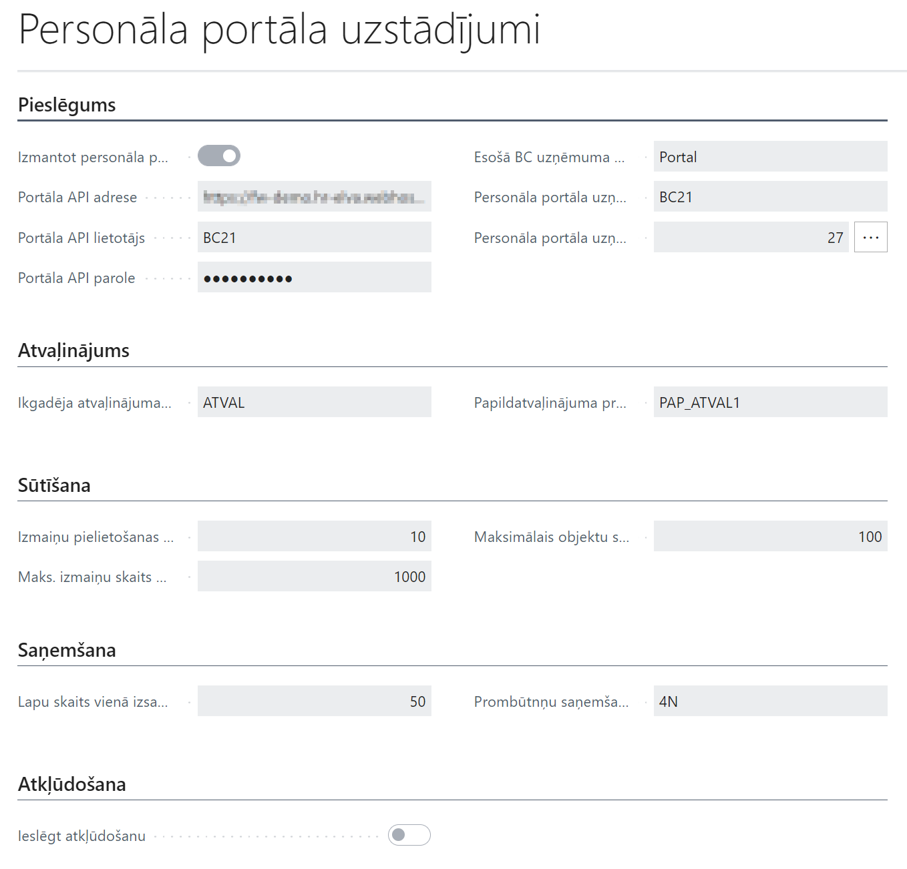
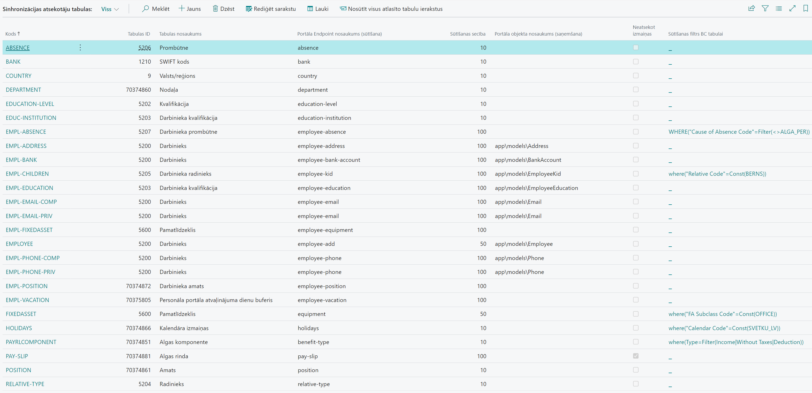
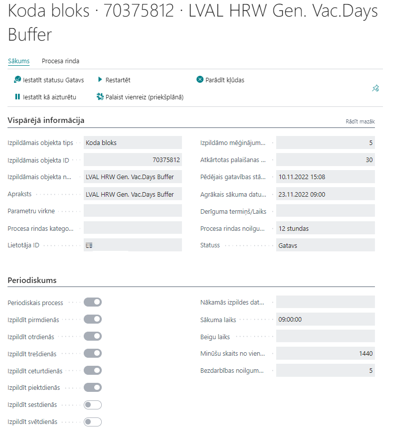
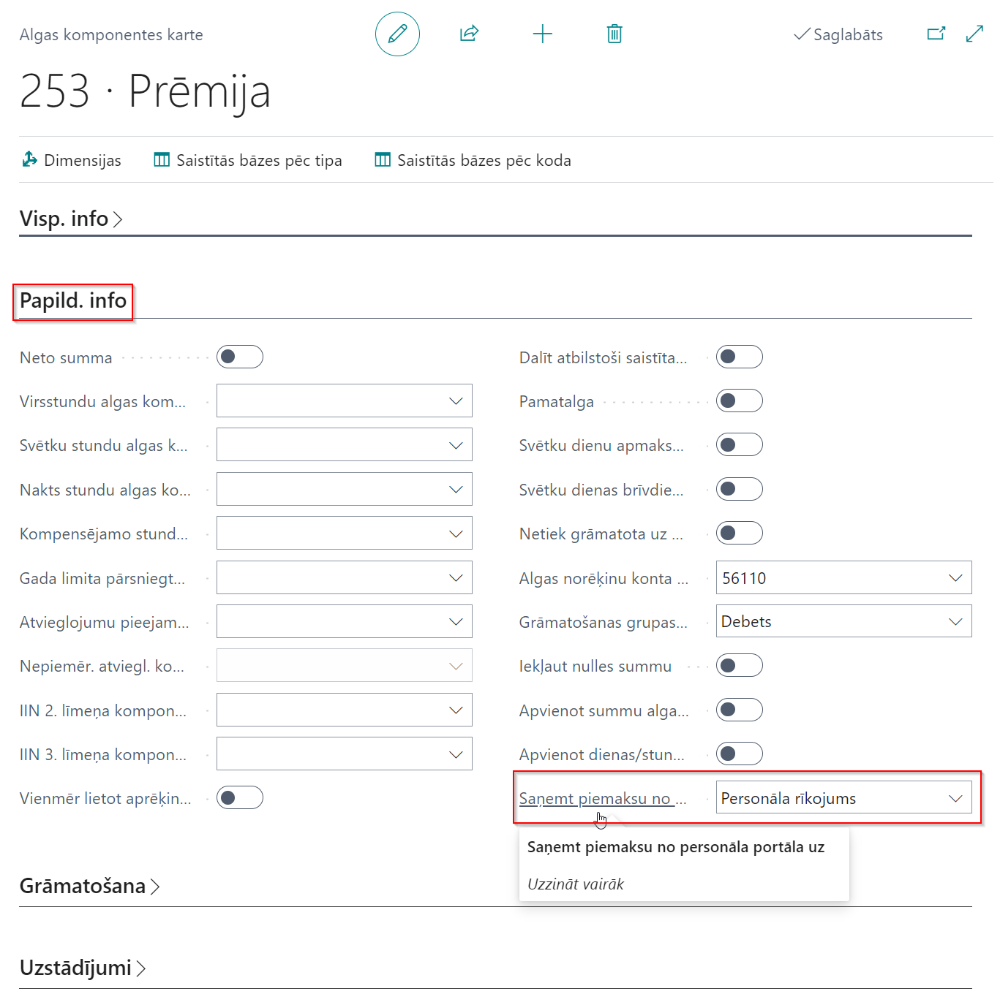
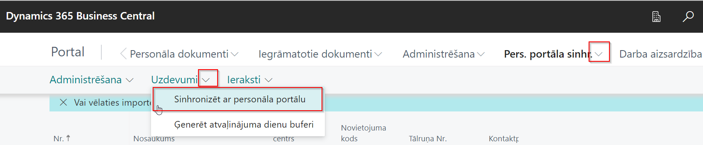
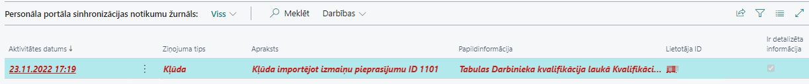
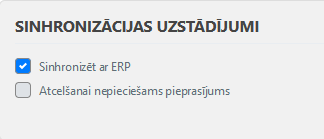

Kā sākt strādāt
- Jābūt instalētiem Elva Baltic SIA risinājumiem Latvian Payroll, Latvian Payroll Advanced un Latvian Personnel.
- Administrēšanai jāizmanto lomu centrs “LV Personāls”. Izmantojot personalizēšanu, jāatver atbilstošas funkcijas:

- No Panorama 365 izstrādātājiem jāsaņem sekojoša informācija:
- API adrese
- Lietotāja vārds
- Parole
Sinhronizācijas uzstādījumi
- Personāla portāla uzstādījumi (piemērs, pēc nepieciešamības var mainīt)

- Sinhronizācijas atsekotāju tabulas un lauki. Lai tos uzstādītu, ir iespējams ieimportēt (attiecināt) konfigurācijas pakotni un mainīt uzstādījumus pēc nepieciešamības.

Rezultātā Sinhronizācijas atsekotāju tabulu lapā tiks izveidoti ieraksti:

Nepieciešamības gadījumā var mainīt lauku Eksporta filtrs NAV tabulai (piemēram, radinieka kods, kalendāra kods, prombūtnes kods u.c.). Katram ierakstam ir definēti atbilstošie lauki, kuri tiks sinhronizēti. Piemēram, prombūtnēm ir sekojoši lauki:

- Ja nepieciešams automatizēt sinhronizāciju, ir jādefinē šis process procesu rindās. Lapā Procesu rindu ieraksti jāizveido procesa kartiņa (ja tika importēta konfigurācijas pakotne, tad šis process tiks izveidots, var pārbaudīt tikai uzstādījumus konkrētam uzņēmumam).
Automātiskai atvaļinājumu dienu atlikumu sinhronizācijai ir nepieciešams sekojošs process, kura periodiskumu vajag uzstādīt izpildei ne biežāk kā vienu reizi dienā:

- Prombūtņu saņemšanai no portāla ir jānodefinē, uz kurieni atnāks informācija no Panorama 365 par konkrētu prombūtnes veidu. Lai to definētu, jāatrod prombūtņu iemeslu katalogs un jāaizpilda sadaļa Personāla portāls.

Iespējams saņemt no portāla informāciju uz Prombūtnes reģistru, vai uz Personāla rīkojumiem. Ja izvēlēts Personāla rīkojums, jānorāda rīkojumu importa Nr. sērija. Ar šo numuru sēriju tiks veidoti rīkojumi, saņemot informāciju no portāla. Gadījumā, ja šī prombūtnes kartes sadaļa nav aizpildīta, prombūtnes no portāla ar šo kodu netiks sinhronizētasi.
- Piemaksu saņemšanai no portāla jānorāda atbilstošajām algas komponentēm, kurā vietā tiks saņemta informācija no Panorama 365.

Pastāv iespēja izvēlēties :
- Personāla rīkojums
- Komponenšu reģistrs
- Avansu saraksts.
Atkarībā no izvēlētā veida, sistēma veidos personāla rīkojumu ar atbilstošu algas komponentes kodu, vai izveidos ierakstu atbilstošā mēneša komponenšu reģistrā vai ierakstu atbilstošā mēneša avansu sarakstā. Gadījumā, ja šis lauks netiks aizpildīts, piemaksas no portāla ar šo algas komponentes kodu netiks sinhronizētas.
Manuālā sinhronizācijas procesa palaišana
Gadījumā, ja nepieciešams veikt sinhronizāciju ārpus grafika, to var izdarīt: Pers.port.sinhr. -> Uzdevumi-> Sinhronizēt ar personāla portālu.

Nospiežot Ģenerēt atvaļinājuma dienas - tiks pārģenerēts atvaļinājumu dienu buferis un ar nākamo sinhronizācijas palaišanu, tiks nosūtīti atjaunoti dati uz portālu.
Ko darīt, ja nenotiek plānotā sinhronizācija
Ja kāda iemesla dēļ sinhronizācija nenotiek, ir jāatrod iemesls. Lai to izdarītu:
Jāpārbauda, vai atbilstoša procesa rindas ieraksta status ir Gatavs un nav kļūdas paziņojuma.
Jāpārbauda, vai sinhronizācijas ierakstos visi ieraksti ir apstrādāti. Lai to izdarītu, jāatver personāla portāla sinhronizācijas ieraksti. Ja vismaz vienam ierakstam ir statuss “ Neapstrādāts”, tas nozīmē, ka sistēma ieraksti nav nosūtīti uz portālu.

Jāatrod pirmais ieraksts ar statusu “Kļūda”. To var izdarīt, nospiežot pogu Nākamā kļūda pāriet uz pirmo neapstrādāto:

Pēc kļūdas paziņojuma jāmēģina atrisināt problēmu. Kad dati sakārtoti, var nosūtīt izmaiņas :
Ja problēmu novērst nevar, bet sinhronizācija jāpalaiž, var atcelt ierakstu, taču jāņem vērā, ka šis ieraksts netiks nosūtīts uz portālu un jāpārbauda, ka nākamie ieraksti nav saistīti ar atcelto, pretējā gadījumā jāatceļ arī visi saistītie ieraksti. Tad Nosūtīt izmaiņas:

- Gadījumā, ja sinhronizācijas ierakstos visiem ierakstiem ir statuss Apstrādāts, bet sinhronizācija tomēr nenotiek, jāpārbauda Personāla portāla sinhronizācijas notikumu žurnāls.

Šajā žurnālā ir fiksēts, kādi sinhronizācijas darbības procesi tika apstrādāti un to rezultāti. Gadījumā, ja notiek kļūda, importējot datus no portāla, tiek veidots ieraksts šajā žurnālā par šo notikumu.

Kad dati sakārtoti (portāla pusē vai ERP pusē), jāpalaiž sinhronizācijas process – manuāli vai ar procesa rindu, ja tā apstājusies. Periodiski šī žurnāla ieraksti jādzēš, lai neglabātu pārāk daudz ierakstus. Šim nolūkam ir izveidota funkcija Dzēst ierakstus, kura dzēsīs visus atlasītos šajā lapā ierakstus:
- Ja problēmu nevar identificēt, un vajag analizēt, kādi pieprasījumi tika izpildīti sinhronizācijas laikā, tabulā Personāla portāla uzstādījumi jāieliek ķeksis Ieslēgt atkļūdošanu, jāpalaiž sinhronizācija un tabulā Personāla portāla sinhronizācijas notikumu žurnālā pie pēdējā kļūdas paziņojuma jāizvēlas funkciju Eksportēt detaļas failā. Failā būs informācija par API pieprasījumiem ar Json datiem. Pēc problēmas atrisināšanas ķeksi Ieslēgt atkļūdošanu jāizslēdz, lai neglabātos papildus informācija (teksta faili) datu bāzē.
Apstrādes shēmas
Personīgā informācija
Ir iespējams sinhronizēt darbinieka personīgo informāciju. Pieņemot darbā jaunu darbinieku, ievadot datus par viņu ERP sistēmā, informācija tiek nosūtīta uz portālu Panorama 365. Portāla pusē pats darbinieks var pieteikt izmaiņas:
- adrese
- privātais tālrunis
- privātais e-pasts
- bankas konts
Pēc apstiprināšanas portāla pusē, informācija tiek nosūtīta uz ERP sistēmu.
Ja šie dati tiek mainīti ERP pusē, atjaunotie dati tiek sūtīti uz Panorama 365 automātiski.
Bērni
Darbinieks var pievienot informāciju par bērniem vai modificēt informāciju par bērniem. Dzēst bērna datus Panorama 365 pusē ir aizliegts. Pēc apstiprināšanas dati tiek nosūtīti uz ERP sistēmu. Ja ERP sistēmā ir ieslēgta funkcionalitāte par papildus atvaļinājumu dienu piešķiršanu, sistēma pārrēķinās atvaļinājumu dienu skaitu, sākot no tekošā perioda.
Ja ERP pusē ir ievadīti / modificēti / dzēsti dati par bērniem, informācija tiek atjaunota arī Panorama 365 pusē.
Tiek uzturēta sekojoša informācija:
- Bērna vārds / uzvārds (opcionāli - nav ieteicams aizpildīt)
- Dzimšanas datums
- Dzimums (netiek sinhronizēts, jo ERP pusē nav tāda lauka)
- Invaliditāte
Izglītība
Ir iespējams sinhronizēt kvalifikācijas datus. Ievadot informāciju Panorama 365 pusē un pēc apstiprināšanas , informācija tiek sūtīta uz ERP sistēmu.
- Izglītības iestāde ( ERP lauks = Institūcija / uzņēmums )
- Izglītības līmenis (ERP lauks = Kvalifikācijas kods un Apraksts)
- Izglītības veids (netiek sinhronizēts)
- Specialitāte (ERP lauks = Iegūtais grāds)
- Datums no (ERP lauks = No datuma)
- Datums līdz (ERP lauks = Līdz datumam)
Ja ERP pusē ir ievadīti / modificēti / dzēsti dati par izglītību, informācija tiek atjaunota arī Panorama 365 pusē.
Gan ERP pusē, gan Panorama 365 pusē ir aizliegts labot kvalifikācijas kodu (Izglītības līmenis). Jādzēš ieraksts ERP pusē un jāveido jauns ieraksts ERP sistēmā vai portālā.
Dzēst kvalifikācijas ierakstus portāla pusē ir aizliegts.
Prombūtņu apstrāde
ERP pusē, veidojot/mainot/dzēšot ierakstus prombūtņu katalogā tie tiek sūtīti uz portālu. Sūtītā informācija: prombūtnes kods, prombūtnes nosaukums, G/U kods, Kalendāro dienu ierobežojums, Valsts/Reģiona kods.
Portāla pusē katram prombūtnes kodam ir uzstādījumi, kā apstrādāt šo prombūtnes kodu. Galvenie sinhronizācijas uzstādījumi:

Atvaļinājumiem ir iespēja norādīt atvaļinājuma naudas izmaksas veidu:


UZ ERP tiks sūtītas portālā izveidotas prombūtnes tikai ar statusu Apstiprināts.
Atkarībā no prombūtnes uzstādījumiem ERP sistēmā, sinhronizācijas rezultātā ieraksts ir izveidots prombūtņu reģistrā vai personāla rīkojumos. Ja prombūtņu kodam importa veids nav noradīts, tāda prombūtne netiks importēta ERP sistēmā un par to būs brīdinājums tabulā Personāla portāla sinhronizācijas notikumu žurnāls.
Ja Importēts ieraksts (personāla rīkojums) ir izdzēsts ERP pusē Vai rīkojums ir anulēts, tad sistēma nosūtīs uz portālu informāciju, ka šī prombūtne ir atcelta.
Importētus ierakstus (prombūtnes ieraksts) ir atļauts dzēst ERP pusē, ja nav piesaistīts algas dokuments, vai “Atcelt prombūtni”, ja jau ir piesaistīts algas dokuments. Rezultātā sistēma nosūtīs uz portālu informāciju, ka šī prombūtne ir atcelta.
Algas lapiņas
ERP sistēma nosūta algas lapiņu tikai, ja algas sarakstam ir statuss Nodots vai Grāmatots. Gadījumā, ja pēc tam nomainīts statuss uz Atvērt, dati tiks izdēsti portāla pusē. Ja tiks veikts pārrēķins šajā dokumentā, un nomainīts status uz Nodots vai iegrāmatots, tad dati tiks atjaunoti portāla pusē.
Gadījumā, ja aprēķins ir stornēts, uz portālu tiks sūtīta papildus algas lapiņa Respektīvi, portālā tiks atspoguļotas visas algas lapiņas par stornētiem un nestornētiem algu sarakstiem.
Piemaksu / atvilkumu / avansu summu sinhronizācija
Lai sinhronizētu piemaksas / atvilkumus, jānosūta ERP algas komponenšu katalogs uz Panorama 365.
Personāla portāla atsekotājs – Tabulas:
| Kods | Tabulas ID | Tabulas nosaukums | Portāla Endpoint nosaukums (eksports) | Eksportēšanas secība | Portāla objekta nosaukums (imports) | Neatsekot izmaiņas | Eksporta filtrs NAV tabulai |
|---|---|---|---|---|---|---|---|
| PAYRLCOMPONENT | 25000000 | Algas komponente | benefit-type | 10 | Nē | where(Type=Filter(Income|Without Taxes|Deduction)) |
Personāla portāla atsekotājs – Lauki:
| Rindas Nr. | Tips | Lauka Nr. | Lauka virsraksts | Konstante / Funkcija | Portāla lauka nosaukums | Portāla lauka tips | Portāla lauka garums | Portāla ārējā atslēga | Portāla lauks obligāts | Izlaist lauka validāciju |
|---|---|---|---|---|---|---|---|---|---|---|
| 1 | Lauks | 1 | Kods | code | string | 50 | Nē | Nē | Nē | |
| 2 | Lauks | 3 | Nosaukums | description | string | 500 | Nē | Nē | Nē | |
| 3 | Konstante | 0 | 0 | payAsPercent | int | 0 | Nē | Nē | Nē | |
| 4 | Funkcija | 0 | PayrlCompAmount | presetedValue | float | 0 | Nē | Nē | Nē | |
| 5 | Funkcija | 0 | IsDeleted | state | int | 0 | Nē | Nē | Nē | |
| 6 | Lauks | 25000970 | Valsts/Reģiona kods | countryCode | string | 0 | Nē | Nē | Nē |
Pamatojoties uz algu komponentēm, Panorama 365 pusē jābūt izveidotam pieteikuma veidam ar uzstādījumiem:

Uzstādījums “Darbinieks var mainīt apjomu” pabalstiem var būt izslēgts, bet ERP pusē jābūt definētai summai (algas komponentes karte -> Uzstādījumi -> No datuma / summa).
Gadījumā, ja portāla pusē vienā pieteikumā var būt vairāki darbinieki, ir atļauts ieslēgt opciju “Pieprasāms vairumā”.
Piemaksu imports
Algu komponentēs (kuras tiks sinhronizētas ar Panorama 365) jāizvēlas opcija laukā Importēt no personāla portāla uz:
No portāla uz ERP sistēmu tiks sūtīti tikai pieteikumi ar statusu Apstiprināts.
Komponenšu reģistrs
Veidojot komponenšu reģistra ierakstu, tiek pārbaudīts, vai atbilstošajā periodā jau ir izveidots komponenšu reģistrs ar pazīmi Personāla portāla izveidotais reģistrs. Ja tāds komponenšu reģistrs pastāv, tiek izveidota rinda ar darbinieka Nr, algas komponentes kodu un summu. Ja reģistrs nav izveidots, tad ņemot vērā piemaksas portāla datumu, tiek veidots jauns komponenšu reģistrs ar atbilstošu gadu un mēnesi un pazīmi Personāla portāla izveidotais reģistrs.
a Panorama 365 pusē veidots pieteikums vairākiem darbiniekiem vienlaicīgi, tad ERP pusē tiek veidots atsevišķs komponenšu reģistrs.
Komponenšu reģistru ir atļauts izdzēst visu, vai izdzēst atsevišķas komponenšu reģistra rindas, tad sistēma nosūtīs uz portālu informāciju, ka šis ieraksts ir atcelts.. Modificēt ierakstus, kuri tika importēti no portāla, nav atļauts.
Personāla rīkojums
Veidojot personāla rīkojumu tiek pārbaudīts - ja pastāv iegrāmatotā personāla rīkojuma rinda ar importētu “Personāla portāla ID”, tad process beigsies ar kļūdas paziņojumu Personāla portāla notikumu žurnālā un tiks nosūtīts uz portālu statuss Atcelts. Ja pastāv personāla rīkojuma rinda ar importētu “Personāla portāla ID” un statusu nav vienādu ar Izveidots, tad process beigsies ar kļūdas paziņojumu Personāla portāla notikumu žurnālā. Pretējā gadījumā, ja personāla rīkojuma rinda nav atrasta, tiks veidots jauns rīkojums un rinda ar importētu darbinieku un notikumu veidu - Piemaksa/Atvilkums.
Tiek aizpildīti sekojoši Rindas kartes lauki:
o Komponentes kods o Datums o Summa o Personāla portāla ID
Katram pieteikumam tiek veidots atsevišķs rīkojums, izņemot gadījumus, kad Panorama 365 pusē tiek veidots pieteikums vairākiem darbiniekiem vienlaicīgi, tad tiek veidots viens rīkojums ar vairākiem darbiniekiem. Modificēt rīkojumu, rīkojuma rindu, rīkojuma Rindas karti ir aizliegts. Rīkojums jāgrāmato. Nepieciešamības gadījumā var atcelt rīkojumu, tad sistēma nosūtīs uz portālu informāciju, ka šis ieraksts ir Atcelts.
Gadījumā, ja nav iespējams nomainīt statusu uz Pabeigts, lai iegrāmatotu rīkojumu, jo nostrādā standarta pārbaudes (piemēram, jau eksistē algas saraksts), ir atļauts izdzēst rīkojumu / rīkojuma rindu. Uz portālu tiks nosūtīts statuss Atcelts.
Avansu saraksts
Veidojot avansu sarakstu, gadījumā, ja portāla pieteikums bija izveidots vairākiem darbiniekiem vienlaicīgi, tad katram pieteikumam tiek izveidots atsevišķs saraksts. Gadījumā, ja pieprasīts avanss atsevišķiem darbiniekiem, tad tas tiks importēts pirmajā atvērtajā avansa sarakstā, kurā nav iekļauts šis darbinieks. Tiek aizpildīta informācija algu komponenšu rindai:
o Kods o Summa
Avansa sarakstu var dzēst, kā arī rindu var dzēst, tad sistēma nosūtīs uz portālu informāciju, ka šis ieraksts ir Atcelts. Modificēt ierakstus, importētus no portāla, ir aizliegts.
Ja portāls atsuta datus par mēnesi, kurā jau eksistē algas rinda, tad:
- Ja algas saraksta statuss ir atvērts, tad būs kļūdas paziņojums par šo, sinhronizācijas process apstāsies..
- Ja algas saraksta statuss ir Nodots vai Grāmatots, tad kļūda tiks fiksēta notikumu žurnālā, sistēma nosūtīs uz portālu informāciju, ka šis ieraksts ir Atcelts, bet sinhronizācijas process turpināsies.
Darba laika uzskaite
Portāls sūta uz ERP sistēmu visus iepriekš nenosūtītus darba laika uzskaites datus, kuriem ir statuss Apstiprināts, neskatoties, par kādu periodu ir dati.
ERP sistēmā tiek saņemts tikai faktiskais darba laiks (uzskaite). Plānotās stundas netiek sinhronizētas.
Tiek sūtīta sekojoša informācija (no tabulas employee-hour-periods):
- Datums
- Kopējās dienas stundas
- Nakts stundas
- Amata Nr. (ja nav aizpildīts, tad tiek atrasts galvenais amats uz šo datumu)
Uzskaites ierakstos tiek veidotas rindas tikai par datumiem, kuri tika atsūtīti no portāla puses. Lai sistēma pievienotu prombūtnes šai uzskaitei, vajag palaist funkciju Kopēt no prombūtņu reģistra.
Dimensijas netiek apstrādātas.
Datiem saņemtiem no portāla tiek veidots viens uzskaites dokuments atbilstošajā periodā.
Amata maiņas gadījumā, pirms sūtīt darba stundas no Panorama 365, jāsasinhronizē jauns amats ar portālu.
Saņemtās faktiskās stundas var rediģēt, dzēst ERP sistēmā. Uz portālu šīs izmaiņas netiks sūtītas, līdz ar to informācija var atšķirties.